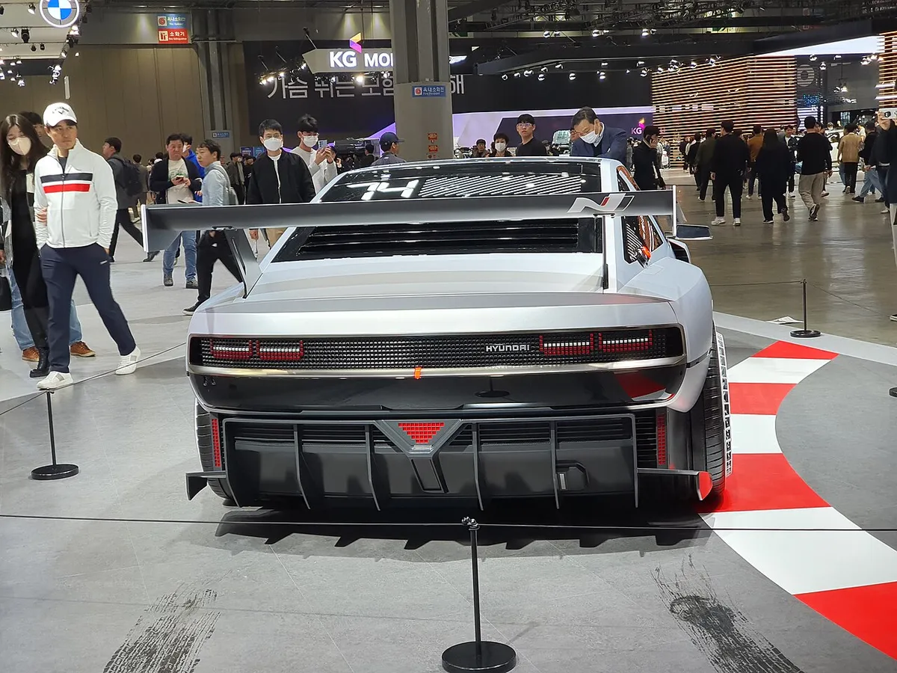
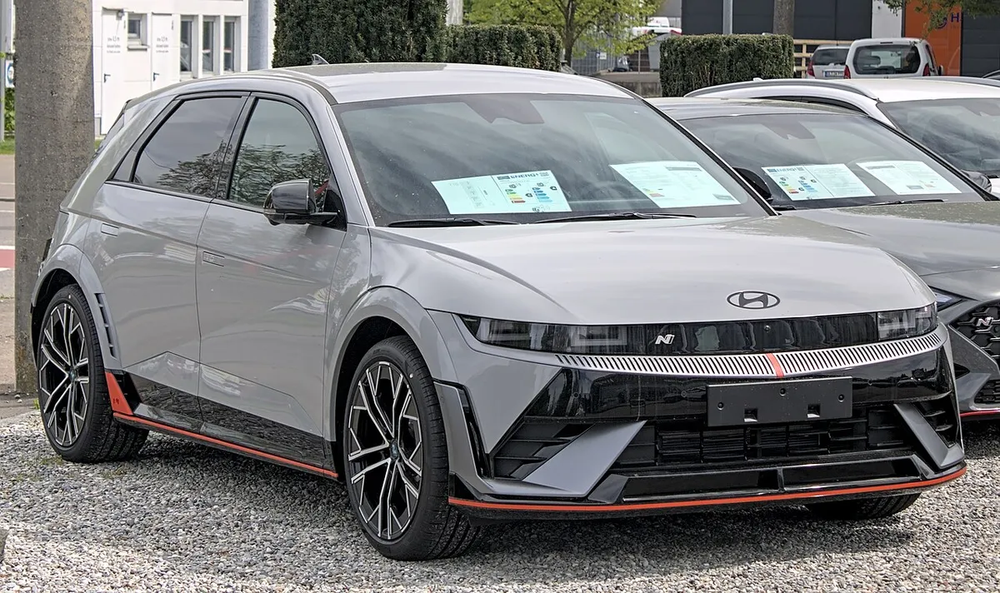
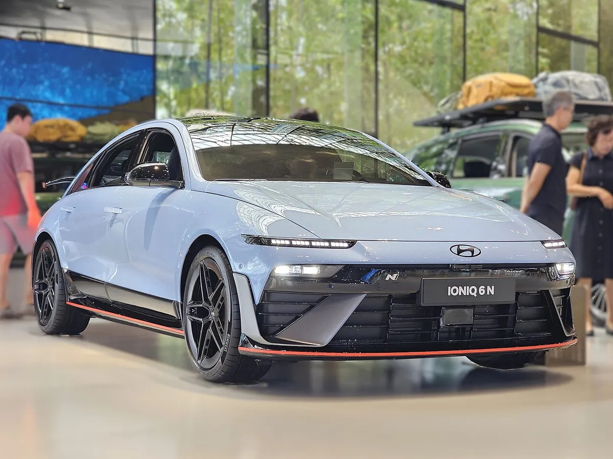
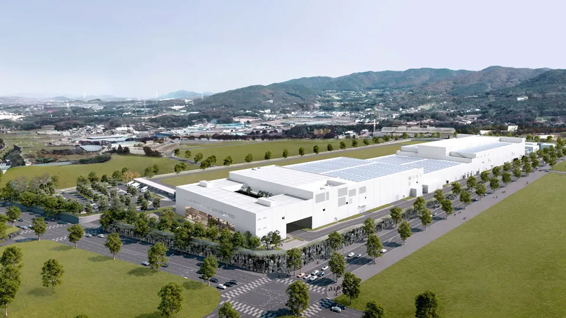
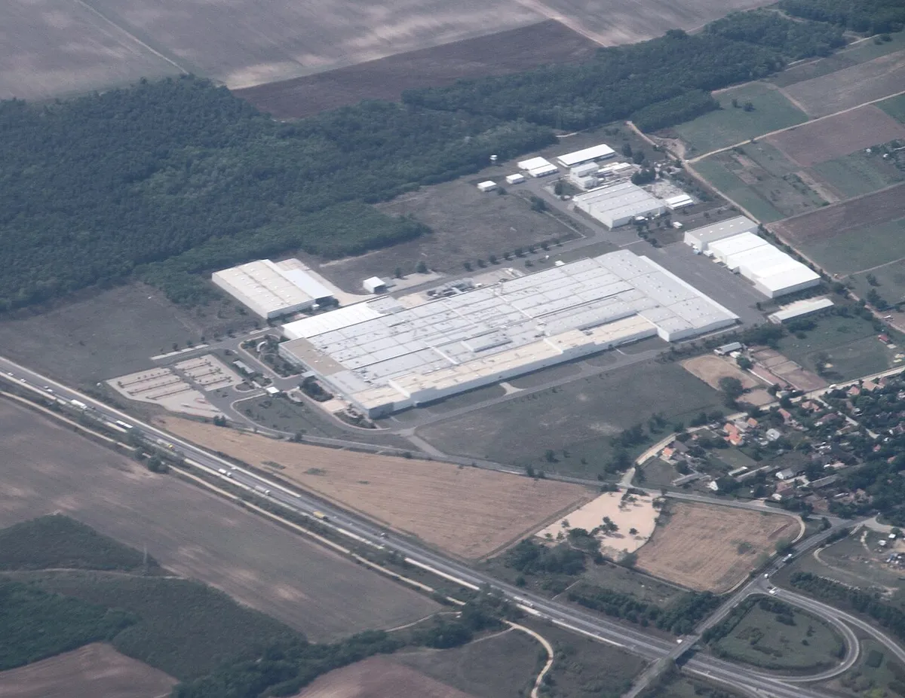
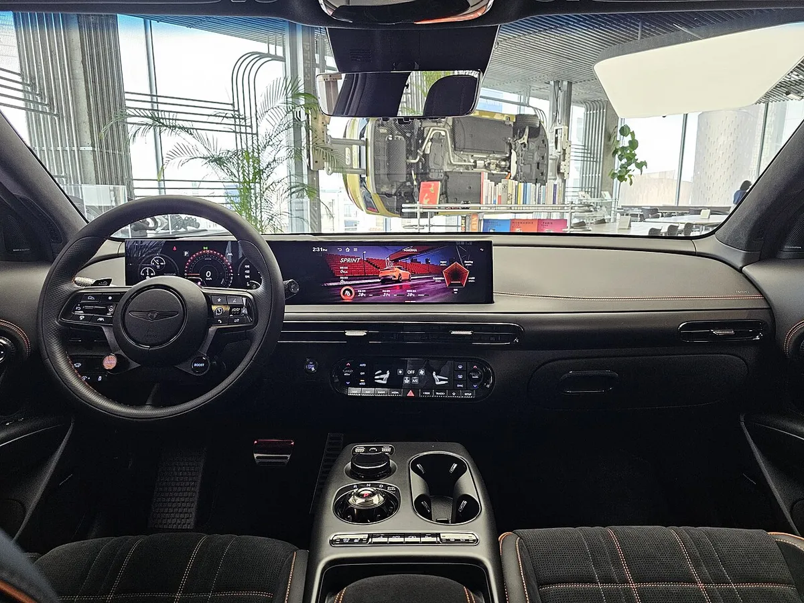
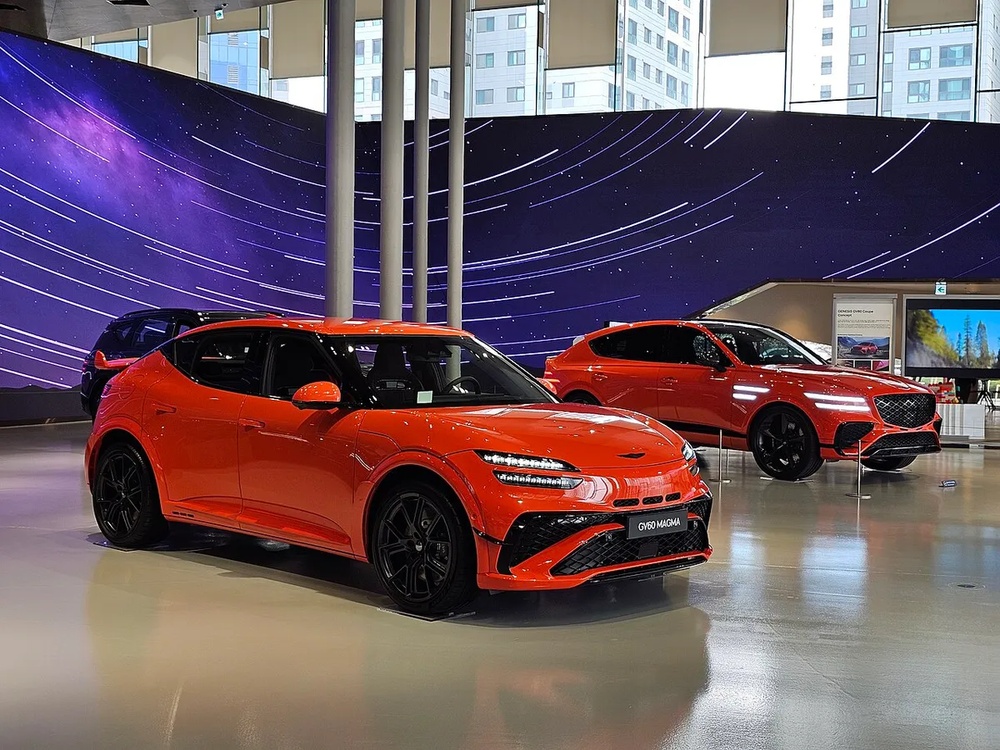

▲ 현대차의 고성능 브랜드 N이 선보인 콘셉트카 N 비전 74. 이번 보도에서 헤일로 카의 구체적 모델은 언급되지 않았다 ⓒ MrWalkr / Wikimedia Commons (CC BY-SA 4.0)
"지금 이 기술을 포기할 수는 없다. 게임 안에 있어야 한다." 현대차그룹 R&D 본부장 만프레드 하러가 전고체 배터리에 대해 한 말이다. 이 발언은 9월 17~18일 미국 산호세에서 열린 'HMG 테크 탤런트 포럼 2026' 현장에서 기자들과 만난 자리에서 나온 것으로 국내 매체 더구루가 전했고, InsideEVs 등 외신은 이를 바탕으로 "5년 안에 전고체 팩을 얹은 소량 생산 헤일로 카가 시장에 나올 것"이라는 전망으로 보도했다(비즈니스포스트는 InsideEVs 보도를 9월 27일자로 소개).
1. 하러 본부장은 정확히 뭐라고 했나
발언의 골자는 세 가지다. 첫째, 전고체 배터리는 여전히 추구할 가치가 있다는 것이다. 하러 본부장은 배터리가 작아지고, 급속충전 성능이 크게 좋아지고, 주행거리가 늘고, 안전성이 높아지는 장점을 무시하기 어렵다고 말했다. 둘째, 그 장점을 가장 먼저 누릴 차는 소량 생산 헤일로 카가 될 것이라는 전망이다. 셋째, 대중차로 내려오는 데에는 시간이 걸리는데 그 이유가 기술보다 비용이라는 점이다.
| 항목 | 내용 |
|---|---|
| 발언자 | 만프레드 하러, 현대차그룹 R&D 본부장 (전 포르쉐·BMW 엔지니어로 소개) |
| 발언 시점·장소 | 9월 17~18일, 미국 산호세 'HMG 테크 탤런트 포럼 2026' 기간 기자 대상 발언(더구루) |
| 출시 시점 | "향후 5년 이내" 소량 생산 헤일로 카 |
| 차종·사양 | 구체적인 모델명·성능·가격은 밝히지 않음 |
| 기대 장점 | 배터리 소형화, 급속충전 성능, 주행거리, 안전성 |
| 최대 걸림돌 | 원자재 비용 (대중차 적용의 장벽) |
| 개발 방식 | 자체 R&D + 삼성SDI·솔리드 파워·팩토리얼에너지 등과 협업 |
📍 '2031년 이전'은 어떻게 나온 표현인가
하러 본부장이 말한 것은 "향후 5년 이내"이고 정확한 연도를 못 박은 것은 아니다. 오토헤럴드가 이를 '2031년 이전 출시 선언'으로 옮겼는데, 2026년 기준 5년 뒤가 2031년이라는 계산에서 나온 표현이다. 현대차가 공식 출시 연도를 발표한 것은 아니며, 한국어 보도에서 '출시'는 소량 생산 모델이 시장에 나오는 것을 뜻한다.

▲ N 비전 74 후면. 헤일로 카는 브랜드의 기술력을 상징하는 소량 생산 모델을 뜻한다 ⓒ Damian B Oh / Wikimedia Commons (CC BY-SA 4.0)
2. 왜 대중차가 아니라 '헤일로 카'부터인가
하러 본부장은 영어 발언에서 "5년 안에 원자재 비용 문제를 풀 수 있다고는 생각하지 않는다(I am not believing you can solve the raw material cost problem in five years from now)"고 말했다고 알려졌다. 결국 '기술은 5년 안에 소량 차에 들어가도, 가격은 그대로 높다'는 뜻이다.
헤일로 카는 판매 대수보다 기술 이미지를 끌어올리기 위한 소량·고가 모델을 뜻한다. 원자재 비용이 높은 전고체 배터리를 가격 부담이 상대적으로 덜한 고성능·고급 모델에 먼저 쓰는 것은 자연스러운 수순이다. The Next Web은 하러 본부장의 발언을 "전고체 차는 5년 뒤에나 나오고, 그 뒤에도 여전히 비싸다"는 제목으로 요약했다.
✅ 하러 본부장이 짚은 비용 문제
· 기술적 난관은 언젠가 풀 수 있지만 "엄청난 비용이 따른다"
· 원자재 비용은 기술이 확대되는 과정에서도 오랜 기간 매우 높게 유지될 것으로 전망
· 따라서 대중 시장 진입은 한참 뒤, 헤일로 카 → 프리미엄 → 대중 순의 확산이 예상됨
· 이 부분은 하러 본부장의 개인 전망으로, 현대차가 공식 가격·원가를 공개한 것은 아님

▲ 아이오닉 5 N. 현대차 N 브랜드의 고성능 전기차. 이번 보도에서 헤일로 카 후보로 언급된 것은 아니다 ⓒ Alexander-93 / Wikimedia Commons (CC BY-SA 4.0)
3. 자체 개발과 솔리드 파워 협업, 그리고 싼타페 EREV
현대차는 전고체 배터리를 자체 연구와 함께 여러 파트너와 병행해 개발한다. 아시아경제 등 보도에 따르면 삼성SDI와는 황화물계 고체 전해질과 전극·셀 기술을 공동 연구해 공동 특허도 확보했고, 팩토리얼에너지와는 셀 성능 개선과 차량 적용 기술을, 미국 솔리드 파워(Solid Power)와는 요소 기술과 제조 공정을 개발 중이다. 더구루는 현대차가 파일럿 생산을 거쳐 2030년 전후 양산을 목표로 한다고 전했다.
흥미로운 대목은 내년 초 출시 예정인 싼타페 EREV다. 오토헤럴드에 따르면 이 차에는 현대차가 자체 개발한 NCM 셀이 처음 탑재된다. 전고체는 아니지만, 배터리 내재화 과정의 중간 기착지로 볼 수 있다.
| 구분 | 내용 | 시점 |
|---|---|---|
| 싼타페 EREV | 자체 개발 NCM 셀 최초 탑재 | 내년 초 출시 예정 |
| 전고체 헤일로 카 | 소량 생산 고성능 모델 | 향후 5년 이내 |
| 전고체 대중차 적용 | 원자재 비용이 걸림돌 | 시기 미정, 한참 뒤 |
| 양산 목표(과거 보도) | 2030년 전후 양산 추진 | 2030년 전후 |

▲ 아이오닉 6 N. 현대차 N 브랜드의 또 다른 고성능 전기차. 헤일로 카의 브랜드와 차종은 공개되지 않았다 ⓒ Damian B Oh / Wikimedia Commons (CC BY-SA 4.0)
4. 연구·시험 인프라 — 의왕 파일럿 라인과 안성 배터리 캠퍼스
현대차그룹은 경기도 의왕 연구소에 차세대 배터리 연구동과 전고체 배터리를 시험 생산할 수 있는 파일럿 라인을 구축했다. 전자신문은 2024년 8월 이 설비가 삼성SDI에 견줄 만한 규모라는 업계 평가와 함께 자동화 물류 장비까지 갖출 것이라고 전했고, 연구동 개소식은 2025년 3월로 예정됐다고 보도됐다.
이어 현대차·기아는 경기도 안성에 '미래 모빌리티 배터리 안성 캠퍼스(MAAC)'를 짓고 있다. 더구루는 1조 2,000억 원 규모로 올해 안에 완공될 예정이라고 전했다. 아시아경제 보도에 따르면 이곳은 양산 공장이 아니라 소재-셀-모듈-팩-차량으로 이어지는 개발 전 과정을 검증하는 '기반 기술 확보' 시설이며, EV·EREV용 고성능 리튬이온 셀, 전고체 배터리, 로보틱스·AAM용 배터리를 다룬다.

▲ 현대차·기아 미래 모빌리티 배터리 안성 캠퍼스 조감도(현대차그룹 보도자료 이미지). 실제 촬영 사진이 아닌 렌더링이다 ⓒ 현대자동차그룹
| 시설 | 위치 | 역할 | 비고 |
|---|---|---|---|
| 차세대 배터리 연구동·전고체 파일럿 라인 | 경기 의왕 연구소 | 전고체 시험 생산, 개발·분석·측정 | 2025년 3월 개소식 예정으로 보도 |
| 미래 모빌리티 배터리 안성 캠퍼스(MAAC) | 경기 안성 | 셀~차량 통합 검증, 전고체 포함 | 1조 2,000억 원 규모·연내 완공 예정(더구루) |
5. 경쟁사는 어디까지 왔나
오토헤럴드는 토요타·폭스바겐·BMW 등 글로벌 완성차가 전고체를 적극 개발 중이지만 아직 양산차는 없다고 정리했다. 오히려 배터리 업계에서는 신중론도 나온다. The Next Web은 LG에너지솔루션 북미 경영진이 "전기차용 전고체는 약 10년 뒤"라는 입장을 밝히고, 그 사이 망간 리치 리튬이온 등 다른 화학계에 집중하고 있다고 전했다. 또한 프랑스가 프롤로지움의 덩케르크 전고체 공장을 지원하고 있지만 대규모 자동차용 양산은 아직 검증되지 않았다.
| 주체 | 내용 | 출처 |
|---|---|---|
| 현대차그룹 | 5년 이내 소량 생산 헤일로 카, 대중화는 원자재 비용 탓에 한참 뒤, 양산 목표 2030년 전후 | InsideEVs·더구루 |
| 삼성SDI | 2027년 전고체 양산 목표, 에너지 밀도 900Wh/L 제시(2024년 로드맵) | 글로벌이코노믹 등 |
| LG에너지솔루션(북미 경영진) | 전기차용 전고체는 약 10년 뒤라는 입장 | The Next Web |
| 토요타·폭스바겐·BMW 등 | 개발 중이나 전고체 양산차는 아직 없음 | 오토헤럴드 |

▲ 헝가리 괴드 일대 삼성SDI 배터리 공장 항공 사진(자료). 전고체 생산 시설이 아니라 삼성SDI의 기존 배터리 공장이다 ⓒ Bjoertvedt / Wikimedia Commons (CC BY-SA 4.0)
📍 카프리즘의 관련 기사
메르세데스-벤츠와 프롤로지움의 협력 확대, 혼다와 퀀텀스케이프의 공동 개발 협약, 지리의 전고체 배터리 공개 등 전고체 경쟁 관련 소식은 앞선 카프리즘 기사에서 다룬 바 있다. 벤츠-프롤로지움 전고체 협력, 혼다-퀀텀스케이프 협약 기사를 참고할 수 있다. 다만 '전고체 양산차 출시 시점'을 공식 확정한 완성차 업체는 여전히 드물다.
6. 이번 발언의 의미 — 그리고 남은 물음
현대차 R&D 수장이 '5년'과 '비용'을 함께 언급한 것은 과도한 기대를 걷어내면서도 개발을 멈추지 않겠다는 신호로 읽힌다. 다만 다음 사항은 이번 보도에서 확인되지 않았다.
✅ 확인되지 않은 부분
· 헤일로 카의 구체적 차종(N 브랜드인지 제네시스인지 등)과 성능·가격
· 전고체 셀을 자체 생산하는지, 파트너 셀을 쓰는지 여부
· '5년 이내'가 양산 시작인지 한정 판매 시작인지의 정확한 의미
· 앞서 정의선 회장이 언급한 전고체 연구 지속 방침과의 구체적 연결 일정

▲ 제네시스 GV60 마그마 실내. 헤일로 카가 어느 브랜드에서 나올지는 아직 공식 언급이 없다 ⓒ Damian B Oh / Wikimedia Commons (CC BY-SA 4.0)

▲ 제네시스 GV60 마그마(왼쪽)와 GV80 쿠페 콘셉트. 고성능 라인업의 사례일 뿐 전고체 헤일로 카 후보로 언급된 것은 아니다 ⓒ Damian B Oh / Wikimedia Commons (CC BY-SA 4.0)
7. 요약
현대차그룹 R&D 본부장 만프레드 하러는 5년 이내 전고체 배터리를 얹은 소량 생산 헤일로 카가 나올 것이라고 밝혔다. 2026년 기준 2031년 무렵이지만 연도가 확정된 것은 아니다.
대중차로의 확산은 원자재 비용 때문에 한참 뒤가 될 전망이다. 하러 본부장은 "모든 것을 풀 수 있지만 엄청난 비용이 든다"고 말했고, LG에너지솔루션은 전고체 전기차가 약 10년 뒤라는 신중한 시각을 내놨다.
현대차는 자체 R&D와 삼성SDI·솔리드 파워·팩토리얼에너지 협업을 병행하고, 의왕 파일럿 라인과 안성 캠퍼스로 검증 기반을 넓히고 있다. 오토헤럴드에 따르면 내년 초 싼타페 EREV에는 자체 개발 NCM 셀이 처음 탑재된다. 헤일로 카의 차종·사양·가격은 아직 공개되지 않아 이후 발표를 지켜볼 필요가 있다.